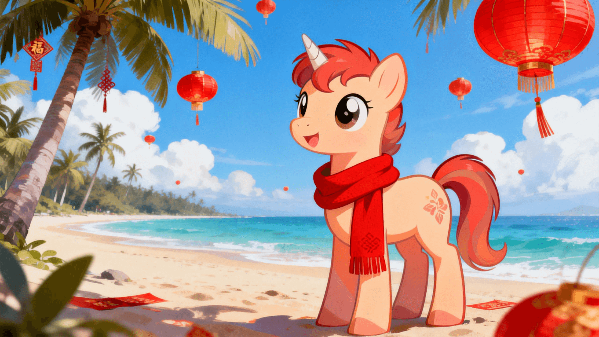
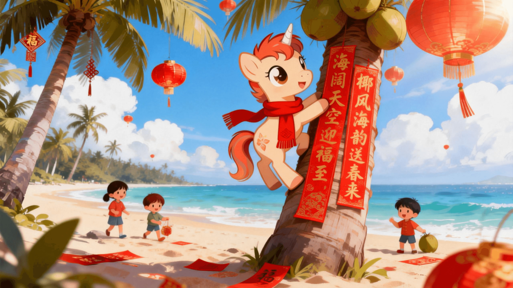
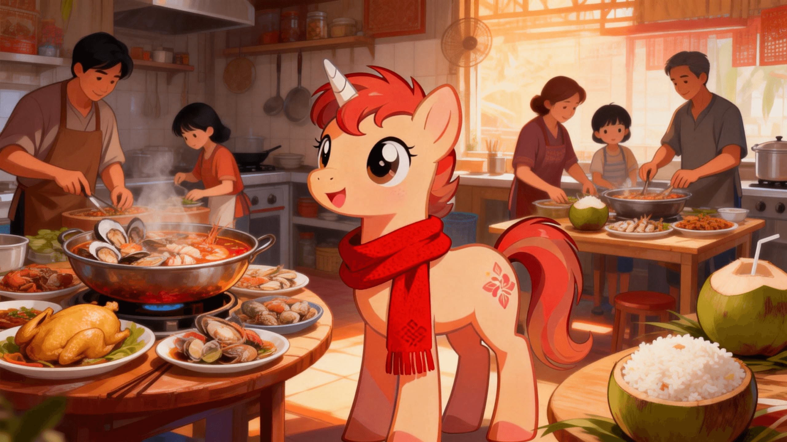
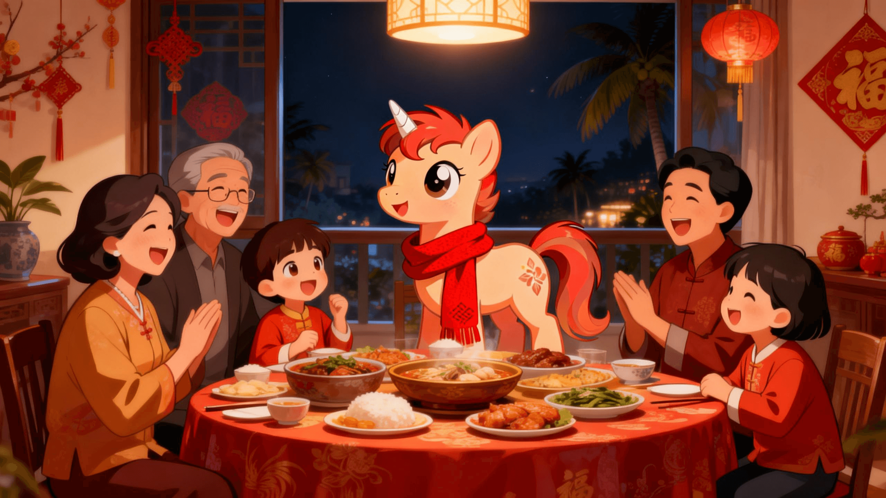

第一幕：踏云而来
传说中，每逢马年，便会有一匹好运小马踏着祥云，日日奔腾，将祝福送往四海。今天，它到达的地点是——阳光海南。
（点击图片区域有惊喜）

第二幕：海岛春联
海南的春联别具一格，除了传统的吉祥话，还融入了椰风海韵。小马帮忙把春联贴在椰树上，海风轻拂，年味正浓。

第三幕：年饭飘香
文昌鸡、海鲜火锅、椰子饭... 海南特色的年夜饭让小马目不暇接。每一道菜都蕴含着家的味道和团圆的期盼。
🐔
🦞
🥥

第四幕：团圆时刻
灯火可亲，家人闲坐。无论身在何处，这一刻的温暖都是最浓的年味。小马也收到了它的红包，里面装着最美好的祝福。
✨ 新年快乐！ ✨
感谢你体验我的年味故事。
无论身在何处，家的温暖与年的喜庆，
永远是我们心中奔腾不息的力量。
—— 一名在海南求学的学子
2026年 马年新春